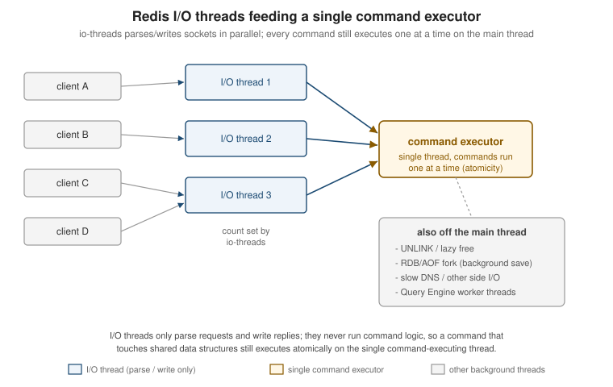

Pipelining, Transactions & Scripting
|
This content was generated with the assistance of AI and should be verified against the official documentation before being relied on in production. |
Examples on this page target Redis Open Source 8.10 (8.10.2) with the Jedis 8 and Lettuce 7.7 client
libraries. Every command discussed so far on this site runs as its own request/response round trip; this page
covers the three ways Redis lets an application do more per round trip, or make several commands behave as
one atomic unit — pipelining (batching requests without waiting for each reply), transactions (MULTI/EXEC
with optimistic locking via WATCH), and server-side scripting (Lua EVAL and, since Redis 7.0, Functions).
Round-trip cost and pipelining
Every Redis command normally pays one full network round trip: the client sends a request, blocks, and waits
for the reply before sending the next one. Over a fast local link this is a fraction of a millisecond, but
loading a few thousand records that way — one SET or HSET per round trip — turns into a few thousand
round trips, and network latency alone dominates total time long before the server’s own per-command cost
does.
Pipelining removes the wait: the client writes several commands to the connection back-to-back, without
reading a reply in between, then reads all the replies once the server has processed them in order. The
server still executes each command individually and in the order received, so pipelining is purely a
transport-level optimization — it does not by itself make several commands atomic, and another client’s
commands can still interleave with a pipelined client’s individual commands (though not with MULTI/EXEC,
covered next). Client libraries buffer pipelined commands up to some batch size before flushing; a very large
pipeline trades memory (on both ends, for the buffered commands and their replies) for fewer round trips, so
an application loading a large dataset typically pipelines in batches of a few hundred to a few thousand
commands rather than the whole dataset at once. See
Redis pipelining.
Loading the three Bookshop books in one pipelined Jedis batch, instead of three separate JSON.SET round
trips:
package com.example.bookshop;
import redis.clients.jedis.RedisClient;
import redis.clients.jedis.PipeliningBase;
import redis.clients.jedis.Response;
import java.util.List;
import java.util.Map;
public class CatalogLoader {
private final RedisClient jedis;
public CatalogLoader(RedisClient jedis) {
this.jedis = jedis;
}
public void bulkLoad(Map<String, String> booksByIsbn) {
List<String> isbns = List.of(
"9780000000001", "9780000000002", "9780000000003");
try (PipeliningBase pipeline = jedis.pipelined()) {
for (String isbn : isbns) {
Response<String> response = pipeline.jsonSetLegacy(
"bookshop:book:" + isbn, booksByIsbn.get(isbn));
}
pipeline.sync();
}
}
}Jedis buffers every call issued through the pipeline object and only sends them, then reads all the replies,
on sync() (called implicitly here when the try-with-resources block closes). See
Redis pipelining for the underlying protocol behaviour
this wraps.
Transactions: MULTI, EXEC, DISCARD
MULTI opens a transaction on the current connection: every command issued afterwards is queued rather than
executed immediately, and EXEC runs the whole queue as a single, uninterrupted block — no other client’s
commands can be interleaved between the queued commands once EXEC starts running them. DISCARD empties the
queue and closes the transaction without running anything. See
Redis transactions.
127.0.0.1:6379> MULTI
OK
127.0.0.1:6379> JSON.NUMINCRBY bookshop:book:9780000000001 $.stock -1
QUEUED
127.0.0.1:6379> INCR bookshop:stats:orders_total
QUEUED
127.0.0.1:6379> EXEC
1) "[4]"
2) (integer) 1043Redis transactions have no rollback, and this is a real semantic difference from a relational database’s
BEGIN/COMMIT/ROLLBACK: a command that is syntactically wrong (an unknown command, or a wrong number of
arguments) is caught at queue time and aborts the whole transaction on EXEC, but a command that queues fine
and then fails only once it actually runs — calling JSON.NUMINCRBY on a key that turns out to hold a plain
string, for instance — simply returns its own error in that position of EXEC’s reply array, and every other
queued command still runs. There is no automatic undo of the commands that succeeded before or after it; an
application that needs rollback semantics has to model that itself, typically by reading state back and
issuing compensating commands. `EVAL/FCALL scripts (covered below) come closer to true all-or-nothing
behaviour, since a script that errors partway generally leaves no observable partial effect from the failed
call itself — though a script that has already issued several redis.call writes before failing has the
same partial-effect exposure as a transaction, for the same reason.
Queuing a command wrong is caught immediately, before EXEC, and aborts the transaction without running
any of it:
127.0.0.1:6379> MULTI
OK
127.0.0.1:6379> NOTACOMMAND bookshop:book:9780000000001
(error) ERR unknown command 'NOTACOMMAND'
127.0.0.1:6379> INCR bookshop:stats:orders_total
QUEUED
127.0.0.1:6379> EXEC
(error) EXECABORT Transaction discarded because of previous errors.WATCH and optimistic locking
MULTI/EXEC alone guarantees that queued commands run atomically once EXEC starts, but it says nothing
about values read before MULTI was opened — a classic check-and-set race, such as reading a book’s stock,
deciding there’s enough to fulfil an order, and only then decrementing it, is still vulnerable to another
client changing that stock in between. WATCH key [key …] marks one or more keys for optimistic locking: if
any watched key is modified by another client between the WATCH call and EXEC, the transaction is aborted — EXEC returns a null reply instead of running the queued commands, and nothing is applied. UNWATCH
clears all watches on the connection without running or discarding a transaction. The usual pattern is a
retry loop: watch, read, decide, queue, EXEC, and if EXEC came back null, start over. See
WATCH and UNWATCH.
A stock decrement guarded this way in Lettuce, retrying until the transaction succeeds:
package com.example.bookshop.inventory;
RedisCommands<String, String> commands = connection.sync();
String key = "bookshop:book:9780000000001";
boolean applied = false;
while (!applied) {
commands.watch(key);
int stock = Integer.parseInt(commands.jsonGet(key, "$.stock").get(0));
if (stock < 1) {
commands.unwatch();
throw new IllegalStateException("out of stock");
}
commands.multi();
commands.jsonNumincrby(key, "$.stock", -1);
TransactionResult result = commands.exec();
applied = !result.wasDiscarded();
}result.wasDiscarded() is Lettuce’s way of surfacing the null EXEC reply that means another client touched
the watched key first, at which point the loop simply re-reads the stock and tries again.
Multi-key commands, cross-slot limits, and hash tags
Outside Cluster mode a transaction, a pipeline, or an ordinary multi-key command (MGET, SUNIONSTORE, …)
can freely span any keys, because every key lives on the same single keyspace. In Redis Cluster, every key is
hashed to one of 16384 hash slots and each slot is owned by exactly one shard, so a command touching keys in
different slots — including the keys inside a MULTI/EXEC block or a Lua script — fails with a
CROSSSLOT error rather than silently running partially. Architecture, Keyspace & Eviction
covers Cluster’s slot model and logical-database restrictions in more depth; this page only covers the
consequence for transactions and scripts.
A hash tag forces two keys to land in the same slot regardless of their full names: if a key name contains a
substring wrapped in braces, only that substring is hashed, not the whole key. bookshop:book:9780000000001
and bookshop:cart:{9780000000001}:u42 would normally hash to different slots, but wrapping the shared
portion in braces — for example keying every per-user record as bookshop:cart:{u42} and
bookshop:lock:inventory:{u42} — pins them to the same slot, and a transaction or script touching both
then works in Cluster mode. The Bookshop scheme in this section otherwise keys locks and carts by ISBN or user
ID without braces, since none of the examples here combine keys across a cluster boundary; a deployment
running Redis Cluster and needing a multi-key transaction across, say, a cart and a per-user lock key would
adopt hash tags for exactly that pair.
Lua scripting: EVAL and Functions
Beyond client-side pipelining and transactions, Redis can run a whole piece of logic on the server, as a Lua
script, with the same atomicity guarantee a transaction gives — the script runs to completion without any
other client’s commands interleaving — but without the round trip per command a MULTI/EXEC block still
pays to queue each one.
EVAL script numkeys key [key …] arg [arg …] runs a Lua script inline; numkeys splits the remaining
arguments into the key names the script may touch (available inside the script as the KEYS table) and plain
arguments (ARGV). Separating keys from arguments this way lets Redis Cluster route the whole call to the
right shard, and lets tooling reason about which keys a script touches without parsing the Lua body. See
EVAL.
127.0.0.1:6379> EVAL "return redis.call('JSON.GET', KEYS[1], '$.stock')" 1 bookshop:book:9780000000001
"[3]"Since re-sending the whole script body on every call wastes bandwidth for anything run repeatedly, Redis
caches scripts server-side by their SHA1 digest: SCRIPT LOAD script compiles and caches a script without
running it and returns its SHA1, and EVALSHA sha1 numkeys key [key …] arg [arg …] then runs the cached
script by that digest — failing with a NOSCRIPT error if the digest isn’t cached on that server, which a
client library typically handles by falling back to a plain EVAL and caching the SHA1 it gets back. See
SCRIPT LOAD and
EVALSHA.
Inside a script, redis.call and redis.pcall both invoke a Redis command, but differ in error handling:
redis.call raises a Lua error on a command failure, which aborts the whole script (surfaced to the caller as
the script’s own error reply), while redis.pcall catches the error and returns it as a Lua table the script
can inspect and react to instead of aborting. EVAL_RO/EVALSHA_RO run a script under a read-only
restriction, rejecting any redis.call/redis.pcall that would write — useful for a read-heavy script that
should be safely runnable against a replica. See EVAL_RO.
Redis Functions
Functions, added in Redis 7.0, are the successor to ad hoc EVAL scripts for logic an application relies on
long-term: instead of a client sending a script body (or its SHA1) on every call, a library of one or more
named functions is registered once and then invoked by name. FUNCTION LOAD [REPLACE] library-code registers
a library; the library body calls redis.register_function (either with just a name and a callback, or with
a table taking function_name, callback, and optional flags) once per function it exposes. See
FUNCTION LOAD.
A bookshop function library with a reserve_stock function that decrements $.stock only if enough stock
remains, guarding the check-then-write the same way the WATCH-based example above does but atomically and
server-side:
#!lua name=bookshop
local function reserve_stock(keys, args)
local isbn_key = keys[1]
local quantity = tonumber(args[1])
local stock = tonumber(redis.call('JSON.GET', isbn_key, '$.stock'):sub(2, -2))
if stock == nil or stock < quantity then
return redis.error_reply('insufficient stock')
end
redis.call('JSON.NUMINCRBY', isbn_key, '$.stock', -quantity)
return redis.status_reply('OK')
end
redis.register_function('reserve_stock', reserve_stock)FCALL function numkeys key [key …] arg [arg …] invokes a registered function the same way EVAL invokes
an inline script; FCALL_RO is its read-only counterpart, rejecting the call unless every function in the
library was registered with the no-writes flag. See FCALL.
127.0.0.1:6379> FUNCTION LOAD "#!lua name=bookshop\nredis.register_function('reserve_stock', function(keys, args) ... end)"
"bookshop"
127.0.0.1:6379> FCALL reserve_stock 1 bookshop:book:9780000000001 1
OKFUNCTION LIST [LIBRARYNAME pattern] [WITHCODE] inspects what’s registered; FUNCTION DUMP serializes every
library into a binary payload and FUNCTION RESTORE payload [FLUSH \| APPEND \| REPLACE] reloads it, the same
export/import shape DUMP/RESTORE give an individual key — useful for moving a library between servers or
including it in a backup alongside the dataset it operates on. See
FUNCTION LIST,
FUNCTION DUMP, and
FUNCTION RESTORE.
In Cluster mode, a function’s keys are subject to the same cross-slot restriction as a script’s KEYS table
described above, and library registration itself (FUNCTION LOAD) is replicated to every shard so a function
is callable regardless of which shard owns the keys it’s invoked against. Under normal (asynchronous)
replication, both scripts and functions replicate as the effects of the writes they performed (the
individual redis.call writes), not as the script or function invocation itself, so a script containing
non-deterministic logic (reading the system clock, for instance) is safe to use — only its deterministic
write effects reach replicas.
Redis briefly shipped a second, JavaScript-based triggers-and-functions engine (Redis 7.2, delivered as the
RedisGears-successor "Triggers and Functions" module) alongside Lua Functions, but it was deprecated and
removed from later Redis Open Source and Redis Software releases in favor of standardizing on the Lua Functions
API described above.
Execution limits, killing, and debugging
A script or function runs on the single main thread the same way any other command does, so a long-running one
blocks every other client for its whole duration — there’s no cooperative yielding partway through. The
busy-reply-threshold config value (in milliseconds; the setting was named lua-time-limit before Redis 7.0)
sets how long a script may run before Redis starts replying BUSY to other clients' commands instead of
queuing them, without stopping the script itself. Past that threshold, SCRIPT KILL (for an EVAL-invoked
script) or FUNCTION KILL (for an FCALL-invoked function) stops it — but only if it hasn’t performed any
write yet, since killing a script partway through writes would leave a partial, unrepeatable effect; a script
already past its first write can only be stopped by shutting down the server (SHUTDOWN NOSAVE) or waiting it
out. See SCRIPT KILL and
FUNCTION KILL.
127.0.0.1:6379> CONFIG SET busy-reply-threshold 5000
OKFor development, the Lua debugger (redis-cli --ldb) attaches to a script invoked with EVAL (or, since
Redis 7.0, FCALL) and steps through it line by line, inspecting KEYS/ARGV and local variables, without
those redis.call writes actually persisting once the debug session ends — the debugger runs the script
against a forked, discarded copy of the dataset for exactly this reason. See
Redis Lua scripts debugger.

WATCH, MULTI, and EXEC end to end
Related pages
-
Architecture, Keyspace & Eviction — the hash-slot model behind the cross-slot limits described above.
-
JSON — the
bookshop:book:<isbn>JSON documents the stock examples on this page read and update. -
Streams, Pub/Sub & Keyspace Notifications — Redis’s other approach to coordinating across clients, contrasted with the transaction and scripting primitives covered here.